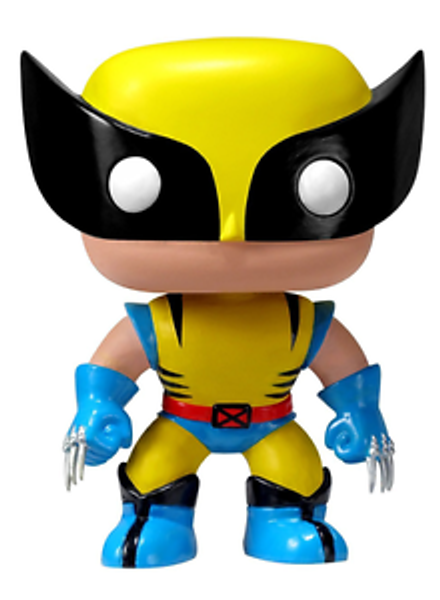
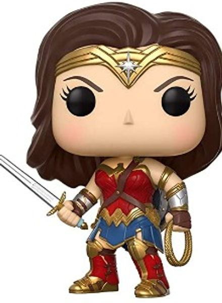

Wolverine |
Mulher-Maravilha |
|
O Wolverine é um personagem fictício que aparece em quadrinhos americanos publicados pela Marvel Comics. Ele é um mutante que possui sentidos aguçados, garras retráteis e fator de cura acelerado, sendo conhecido como um dos membros mais icônicos dos X-Men. A história do Wolverine remonta ao final do século 19, quando ele nasceu James Howlett no Canadá. Sua vida é marcada por tragédias e guerras, incluindo seu envolvimento em várias missões secretas como parte do Programa Arma X, onde ele recebeu seu esqueleto de adamantium e se tornou o Wolverine. Wolverine é frequentemente retratado como um anti-herói solitário, lutando com seus demônios internos enquanto enfrenta inimigos poderosos, incluindo Magneto, Dentes de Sabre e o próprio Apocalypse. Sua história é complexa e multifacetada, explorando temas de identidade, redenção e propósito. Ele já apareceu em várias mídias, incluindo filmes, desenhos animados e videogames, e continua sendo um dos personagens mais populares e duradouros do universo Marvel. |
A Mulher-Maravilha, originalmente conhecida como Princesa Diana de Themyscira, é uma super-heroína fictícia criada pela editora de quadrinhos estadunidense DC Comics. A personagem é uma das mais importantes e conhecidas heroínas da DC Comics e é considerada um ícone da cultura pop. A Mulher-Maravilha foi criada pelo psicólogo e escritor William Moulton Marston e pela artista britânica H.G. Peter, e fez sua primeira aparição na revista All Star Comics #8 em dezembro de 1941. A personagem é uma princesa guerreira das Amazonas, que são uma raça de mulheres guerreiras criadas pelos deuses gregos para proteger a humanidade. Ela possui habilidades sobre-humanas, incluindo força, velocidade, resistência, agilidade, reflexos, sentidos aguçados, e é uma mestre em combate corpo a corpo e em armas. A Mulher-Maravilha é conhecida por seu laço da verdade, que pode obrigar as pessoas a dizerem a verdade, e por seus braceletes, que são capazes de bloquear projéteis e magias. |